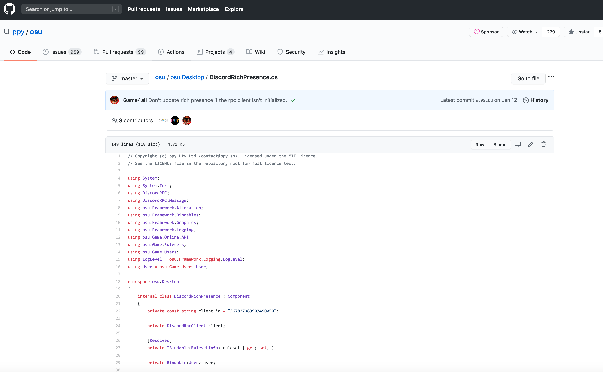

Discord Rich Presence (Discussion)¶
Note
This section goes into the technical aspects of Discord Rich Presence. Looking to diagnose or troubleshoot issues with respect to getting osu! on Wine working with Discord Rich Presence? Click here.
The issue of Discord Rich Presence has always been a complicated one, and one that I haven’t been able to fully address. So, let’s talk about Discord Rich Presence then.
Note
tl;dr:
Discord depreceated discord-rpc in favour of their new GameSDK, which meant a special pipe would need to be used instead of just dropping a DLL in like you could before. However, since only WS11 Wine engines can run 64-bit engines, Techno’s bridge wouldn’t work, which meant we have to look towards 0e4ef622 upstream base fork (since Techno’s fork only adds 64-bit support for Catalina), however that wouldn’t work (and then I had ran out of time to keep looking into the issue)
Understanding Discord Rich Presence¶
If you use Discord regularly, you’ll know that when you load a game, application or other software, it might display a status message in your profile. Both osu!lazer and osu-stable support this feature natively on their respective platforms.

In order for games to use Rich Presence, an additional library or SDK is incorporated into the game.
In the past, Discord used discord-rpc - a library that enabled Rich Presence by including a DLL file with the application, located in the same directory as the executable.
This made it easy for us since we could translate RPC calls from the application, through the Wine compatibility layer, onto your local instance of Discord (which is obviously running outside of Wine), by injecting some code in a modified DLL.
In fact, there are already a number of options available for discord-rpc under Wine. Typing wine discord rpc into Google will fetch you a large number of results, but here are just a few:
However, around April 2019 Discord depreceated discord-rpc in favour of GameSDK. This changes things up so that a single discord-rpc.dll file is no longer used. Instead, we look towards a C# wrapper.
osu!’s implementation of GameSDK¶
Note
This section is about to get technical (and it’s also a bit convoluted), though it isn’t essential to understanding Rich Presence on Wine, so unless you’re interested in the technical aspects of osu! and GameSDK, you don’t really need ot read this section.
C# FFI wrapper for the GameSDK is needed (adapting unity wrapper code?) as well as packaging native libraries for every desktop platform.
Note
This comment was made on a pull request (PR) on the osu!lazer codebase, not osu-stable, but the core concept remains the same.
Since osu-stable is closed-source we don’t know the precise aspects of the GameSDK implementation they opted into, but the lack of a discord-rpc.dll file bundled with the binary at the very least confirms they have moved to GameSDK. However, since osu! is written in C# (it uses .NET) it has two possible implementations of GameSDK - the Unity implementation and the non-Unity implementation.
Note
The Unity implementation is designed to work with games using the Unity Engine.
If you take a look at the osu!lazer codebase however, you’ll see they used a C# implementation that mirrored that of the Unity implementation on the Discord docs.
Whereas the C# with Unity implementation relied on a DiscordController.cs script that gets attached to the main scene (in osu!lazer’s case, osu.Desktop), the C# without Unity implementation relied on a mini library + a DLL file in the same directory as the executable file (sound familiar?).
But I don’t think osu! (stable and lazer) does that. If you take a look inside the drive_c/osu! you won’t find the discord_game_sdk files, including .bundles or .dll. And the presence of the osu/osu.Desktop/DiscordRichPresence.cs file in the osu!lazer codebase really does suggest that osu! has a Unity-esque implementation of GameSDK.
If osu! used the non-Unity C# implementation of GameSDK…
the source files would contain these files

and the binary would contain one of the
.dllor similar library files
So, what can we conclude? osu! uses the C# Unity-style implementation of Discord’s GameSDK in order to facilitate Rich Presence. This is most likely because the Discord Developer Documentation didn’t have a reference implementation for non-Unity C# programs at the time when the feature was initially proposed and then eventually implemented..
Tip
osu! would only be using the C# non-Unity-style implementation if and only if there was the presence of library files in the binaries and C# source files in the source.
Note
You can download the GameSDK zip file from the Discord Developer Documentation.
What does that mean for osu!mac?¶
Firstly, let’s take a look at the current community implementation(s) of Rich Presence on osu!mac: Technocoder’s macOS Wine Bridge, which is a fork of 0e4ef622’s Wine Discord IPC Bridge. You can read each respective repository’s READMEs for the technical information behind these bridges - which basically just bridge Windows named pipes (e.g \\.\pipe\discord-ipc-0 to Unix named pipes (e.g /run/user/{userid}/discord-ipc-0). (Technocoder’s fork converts 0e4ef622’s to 64-bit system calls, if you’re interested)
Let’s step back to the beginning. Do you know why there are separate Catalina< and Mojave> Wineskins? It’s because with macOS 10.15 Apple removed 32-bit application support. To respond to this change, Techno’s Wineskin uses the WineCX19.0.1-1 Wineskin engine, which along with the WS11 engines are the only current options available to getting 64-bit Wine programs to run on Catalina.
While Techno’s bridge will work fine on his 10.15 Catalina and later Wineksin, since it’s a 64-bit program, with a 64-bit Wineskin, slc’s Wineskin uses WS9Wine4.0-rc3 - a 32-bit Wine engine that will ONLY run 32-bit Wine programs.
This took me a while to figure out, especially since cmd wasn’t too useful (giving me only ShellExecuteEx failed: File not found), but after running the Wineskin under a Test Run, the Test logs revealed a Bad EXE format for C:\osu!\bridge.exe. This meant that Wineskin wasn’t able to run the 64-bit program provided by Techno, which makes much more complete sense considering there isn’t a Program Files (x86) folder under slc’s Wineskin and that running the file command on both files (in my local Terminal) revealed that they were in fact differing in architecture.
Adrian@192-168-1-102 ~> file '/Users/Adrian/Desktop/osu!.app/Contents/Resources/drive_c/osu!/osu!.exe'
/Users/Adrian/Desktop/osu!.app/Contents/Resources/drive_c/osu!/osu!.exe: PE32 executable (GUI) Intel 80386 Mono/.Net assembly, for MS Windows
Adrian@192-168-1-102 ~> file '/Users/Adrian/Desktop/osu!.app/Contents/Resources/drive_c/osu!/bridge.exe'
/Users/Adrian/Desktop/osu!.app/Contents/Resources/drive_c/osu!/bridge.exe: PE32+ executable (GUI) x86-64, for MS Windows
(notice how osu! is PE32 [32-bit] while bridge is PE32+ [64-bit])
Actually, Technocoder’s bridge is just a fork of 0e4ef622’s original POC and the most important thing it changes is converting the 32-bit system calls to 64-bit system calls.
So really, all we’d need to do in our 32-bit Wineskin is to use the original 32-bit executable, right?
Unfortunately, while 0e4ef622’s bridge loaded, bringing up:
Pipe Server: Main thread awaiting client connection on \\\\.\\pipe\\discord-ipc-0
and koukono’s fork (which I compiled myself using mingw-w64)
Opening discord-ipc-0 Windows pipe\
(which really are just the same section of the code - the mainloop that tries to create a pipe)
int _tmain(VOID)
{
BOOL fConnected = FALSE;
DWORD dwThreadId = 0;
HANDLE hThread = NULL;
LPCTSTR lpszPipename = TEXT("\\\\.\\pipe\\discord-ipc-0");
// The main loop creates an instance of the named pipe and
// then waits for a client to connect to it. When the client
// connects, a thread is created to handle communications
// with that client, and this loop is free to wait for the
// next client connect request. It is an infinite loop.
_tprintf( TEXT("Pipe Server: Main thread awaiting client connection on %s\n"), lpszPipename);
hPipe = CreateNamedPipe(
lpszPipename, // pipe name
PIPE_ACCESS_DUPLEX, // read/write access
PIPE_TYPE_BYTE | // message type pipe
PIPE_READMODE_BYTE | // message-read mode
PIPE_WAIT, // blocking mode
1, // max. instances
BUFSIZE, // output buffer size
BUFSIZE, // input buffer size
0, // client time-out
NULL); // default security attribute
if (hPipe == INVALID_HANDLE_VALUE)
{
_tprintf(TEXT("CreateNamedPipe failed, GLE=%d.\n"), GetLastError());
return -1;
}
// Wait for the client to connect; if it succeeds,
// the function returns a nonzero value. If the function
// returns zero, GetLastError returns ERROR_PIPE_CONNECTED.
fConnected = ConnectNamedPipe(hPipe, NULL) ?
TRUE : (GetLastError() == ERROR_PIPE_CONNECTED);
int main(void)
{
DWORD dwThreadId = 0;
HANDLE hThread = NULL;
HANDLE wine_evt = NULL;
if ((wine_evt = make_wine_system_process()) == NULL) {
return 1;
}
// The main loop creates an instance of the named pipe and
// then waits for a client to connect to it. When the client
// connects, a thread is created to handle communications
// with that client, and this loop is free to wait for the
// next client connect request. It is an infinite loop.
printf("Opening discord-ipc-0 Windows pipe\n");
hPipe = CreateNamedPipeW(
L"\\\\.\\pipe\\discord-ipc-0", // pipe name
PIPE_ACCESS_DUPLEX, // read/write access
PIPE_TYPE_BYTE | // message type pipe
PIPE_READMODE_BYTE | // message-read mode
PIPE_WAIT, // blocking mode
1, // max. instances
BUFSIZE, // output buffer size
BUFSIZE, // input buffer size
0, // client time-out
NULL); // default security attribute
if (hPipe == INVALID_HANDLE_VALUE)
{
printf("CreateNamedPipe failed, GLE=%lu.\n", GetLastError());
return -1;
}
conn_evt = CreateEventW(NULL, FALSE, FALSE, NULL);
CloseHandle(CreateThread(NULL, 0, wait_for_client, NULL, 0, NULL));
for (;;) {
HANDLE events[] = { wine_evt, conn_evt };
DWORD result = WaitForMultipleObjectsEx(2, events, FALSE, 0, FALSE);
if (result == WAIT_TIMEOUT)
continue;
if (result == 0) {
printf("Bridge exiting, wine closing\n");
}
break;
}
they both couldn’t make a connection with the client (except for 0e4ef622’s bridge which immediately crashed upon Client connected.)
I would have loved to delve into this and see why it wasn’t working - maybe it could be something to do with the WINEPREFIX or something else entirely, however, I’ve already spent enough time trying to get Discord RPC working and my research ends here. But I think this discussion, even if it is overcomplicated and probably unnecessary, could help other people trying to get Rich Presence properly working under Wine (at least with the existing bridges) and these are basically just my research notes for if I ever want to work on this again.
As an FYI, it seems that other people have been having issues too.
EDIT (19 October 2020): Technocoder pointed out that the original base fork from 0e4ef622 uses Linux namespaces, not macOS namespaces. So in order for Rich Presence to work on Mac, someone needs to create a fork that keeps the 32-bit calls of the original base fork, while changing to Linux namespaces like Techno’s fork.
Note
If you feel that you have something to add - feel free to make a PR on GitHub.